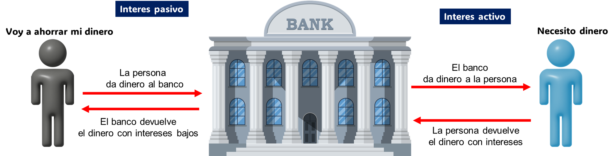

¿Qué es el Crédito?
Sistema financiero (como se mueve la plata)
El sistema financiero peruano es el "sistema circulatorio" de nuestra economía.
Primero, estan los "guardianes":
- BCRP: Preserva la estabilidad monetaria (controlar la inflación) y administra las reservas internacionales.
- SBS: Supervisa que los bancos y cajas sean solventes para que tu dinero esté seguro
- SMV (Superintendencia del Mercado de Valores): Supervisa a quienes invierten directamente en la bolsa
Como se mueve el dinero? El dinero no se queda quieto. Hay 2 formas:
- INTERMEDIACION INDIRECTA: El banco funciona como puente.
Es lo que la mayoría hacemos. Tú pones tus ahorros en el banco y el banco le presta ese mismo dinero a otra persona para que se compre una casa o abra un negocio
• Tasa pasiva: Lo que el banco te paga a ti por guardar tu dinero (ej. 4-6% anual en depósitos a plazo).
• Tasa activa: Lo que el banco cobra a quien le presta dinero (ej. 15-40% en créditos de consumo).
La tasa activa es mucho mayor que la tasa pasiva. El banco busca ganar. Te paga menos si tu pones tu dinero en ellos pero cobra mas si el banco te presta.
• Spread bancario: La diferencia entre ambas tasas es la ganancia del banco

- INTERMEDIACION DIRECTA: Tu eres el inversionista.
Aquí no hay "puente" bancario. Tú vas directamente al mercado (Bolsa de Valores de Lima) y le
compras una acción o un bono a una empresa. Es más arriesgado, pero puede dar más ganancias.
En el siguiente modulo hablaremos sobre inversiones.
score crediticio (tu nota ante el banco)
Muchas personas usan las palabras historial crediticio y score crediticio como si fueran sinonimos.
El historial crediticio es un informe detallado sobre todos los préstamos que has pedido, tus tarjetas de crédito,
si pagas tus servicios (luz, agua, teléfono) a tiempo y si aun tienes deudas activas.
El puntaje crediticio es un número (3 dígitos) basado en el historial crediticio con lo cual las entidades financieras pueden saber si eres confiable o no.
El historial crediticio es como tu examen (los bancos pueden ver en que te equivocastes y ver a detalle tus respuestas) y el score crediticio es tu nota.
Porque es importante?
• Tasas de interés: Si tienes un score alto, el banco te cobra menos intereses si sacas un prestamo ya que confian en ti.
• Limites de credito: Si tienes un score alto, el banco te puede aumentar la linea de credito.
• Alquileres: Muchos propietarios revisan Infocorp antes de rentarte un departamento.
• Empleo: Algunas empresas (especialmente en el sector financiero) revisan tu comportamiento crediticio como parte de sus filtros de selección
SBS y Equifax
Reporte de deudas SBS:
En la pagina de la SBS: https://servicios.sbs.gob.pe/serviciosenlinea
1. Entra a la opcion "Reporte de deudas SBS"
2. Inicia sesion
Lo ideal es que tu reporte sea de 100% (normal) en todos los meses
Nota: Puedes ver tu reporte de deuda. Si es la primera ves que entras a la SBS, tendras que registrarse
Equifax
En la pagina Equifax encontraras tu puntuacion crediticio:
1. Registrate e ingresa aqui: https://soluciones.equifax.com.pe/e-commerce/
2. En tu Dashboard podras ver tu puntuacion crediticio: https://soluciones.equifax.com.pe/e-commerce/dashboard
Nota: La SBS Es un registro histórico. "100% Normal" solo indica que estás al día. Es como un semáforo de "paga o no paga".
En cambio, Equifax es un algoritmo predictivo. No solo mira si pagas, sino qué tan "riesgoso" eres para el futuro basándose en estadísticas.
Si tienes tarjeta de credito, la haz pagado e incluso tienes 100% en la SBS pero tienes baja puntuacion en Equifax. No te asustes, la Equifax te pone una puntuacion
en base a varios factores y uno de esos factores es "el tiempo", si llevas poco tiempo con una tarjeta de credito entonces tu puntuacion sera baja pero no significa que estas haciendo algo malo